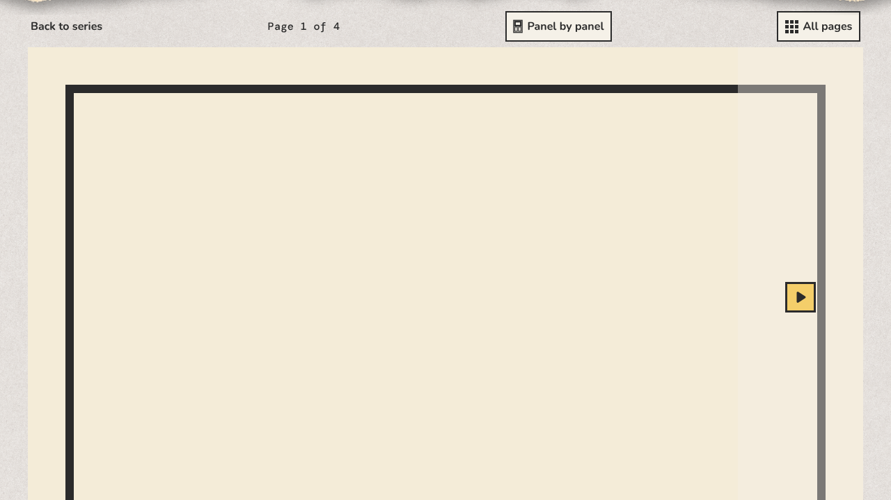
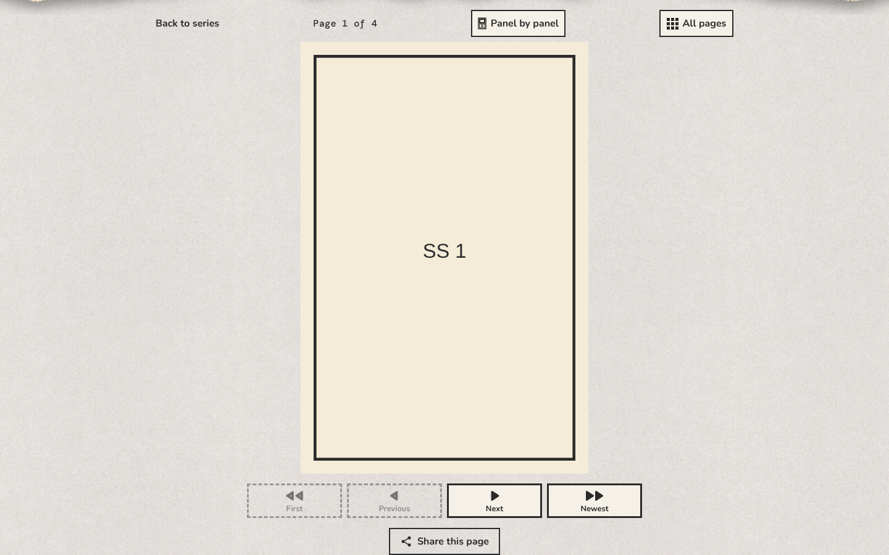
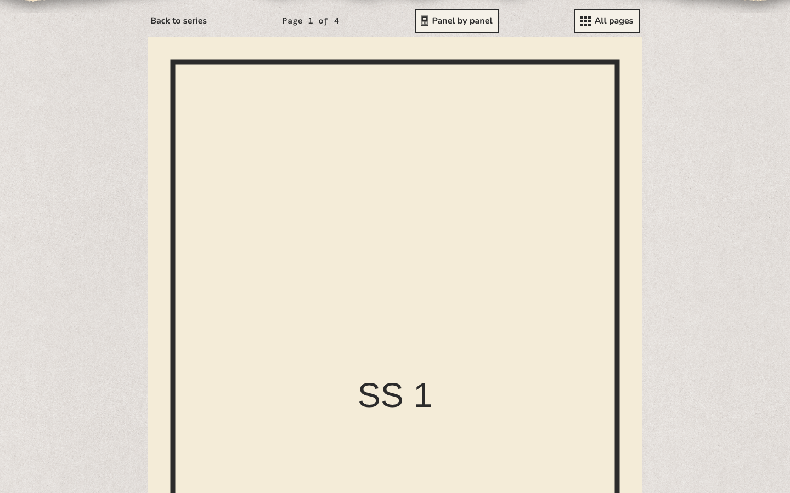
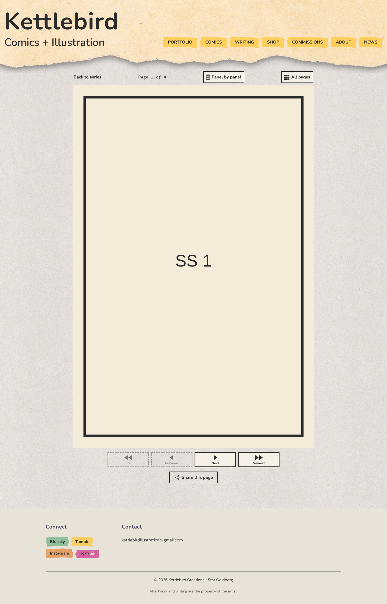
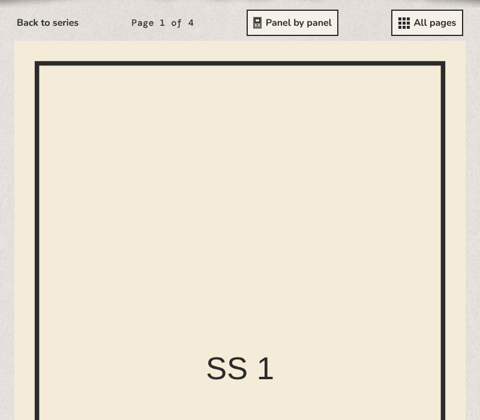
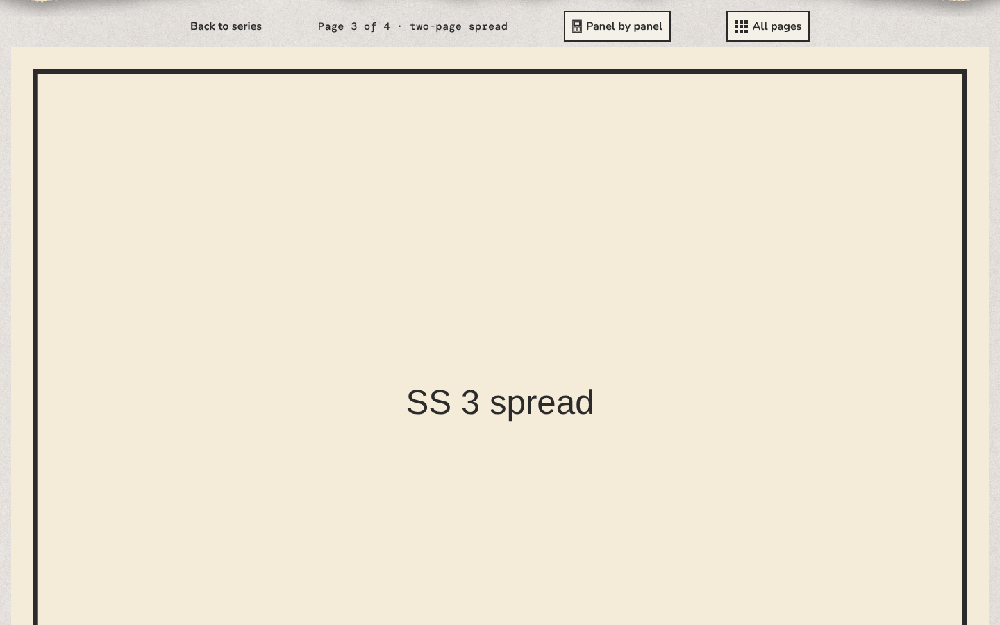

200%

1280 × 720






On a laptop, or a tablet held sideways, show facing pages together, like an open comic. Off: one page at a time on every screen.
Turn pages with an animation of a page turning over. Off: pages change at once.
How wide each page shows on a laptop or desktop, in screen pixels, from 600 to 1600; for example 900. Most laptop windows are 1280 to 1440 pixels wide, and a page fitted to the window today is about 470 pixels wide. Pages can then run below the bottom of the window, and readers scroll down to the buttons; a narrower window shrinks the page to fit. Leave it empty to fit each page into the window, as now. Phones and tablets aren't affected. The preview at Computer is shown smaller, to fit beside the editor.
Preview a chapter to see how it reads.
Two pages side by side is on for this comic, so this has no effect: pairs fit the window. Untick it to read one page at a time at this width.
Choose a width between 600 and 1600 pixels, or leave it empty.
